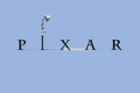
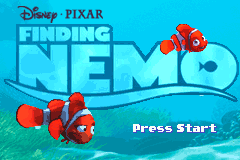

Finding Nemo (USA, Europe)
Stateless / Passcode
Cartridge Identity
- Game Code
AZIE(FamilyAZI)- Header Title
FINDING NEMO- Maker / Revision
78/ rev0- ROM Size
- 8.0 MiB (8,388,608 B)
- Save Media
None / Unknown- SHA-256
96781106c023ec6f3e8c385293c848e4d871e7c19bd0ecbe1c107c6d62f4cf82- Engine / SDK Group
comm-005(81 families)
Screenshots


Cartridge Storage Architecture: Stateless / Passcode
Zero non-volatile battery hardware: This cartridge PCB contains ROM only (no SRAM, Flash, or EEPROM chips). Progression is preserved via on-screen passcodes or session-only gameplay. No
.sav file is generated or required.
ROM Assets, Compression & Audio
- BIOS Compression
- LZ77 (
0x10): 140 streams · RLE (0x30): 0 streams - ROM Pointer Tables
- 102 tables (14 pointing to validated compressed streams)
- SDK Backup Tags
- None
Hardware MMIO Subsystems
ppu_display0x8020328,0x8022000
Regional Variants & Revisions (Family AZI)
- Findet Nemo (Germany) (
AZID, 8 MiB) - Findet Nemo (Germany) (Beta) (
AZID, 8 MiB) - Finding Nemo (Europe) (Es,It) (
AZIY, 8 MiB) - Finding Nemo (Europe) (Fr,Nl) (
AZIX, 8 MiB)